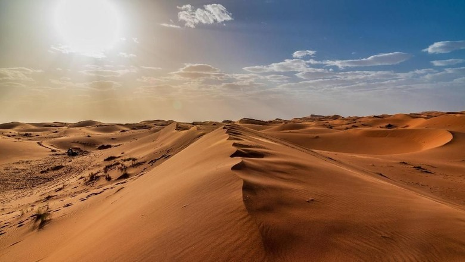

KEINDAHAN INDONESIA

Gunung
adalah sebuah bentuk yang menonjol di atas wilayah
sekitarnya. Sebuah gunung biasanya lebih tinggi dan curam dari sebuah bukit,
tetapi ada kesamaan, dan penggunaan sering tergantung dari adat lokal.